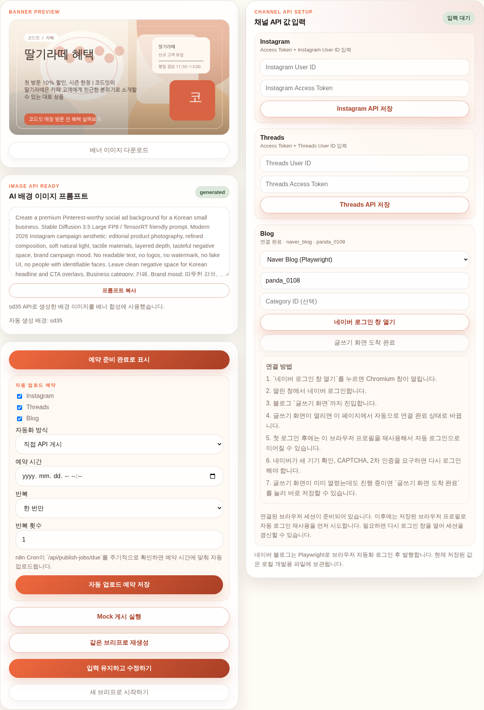
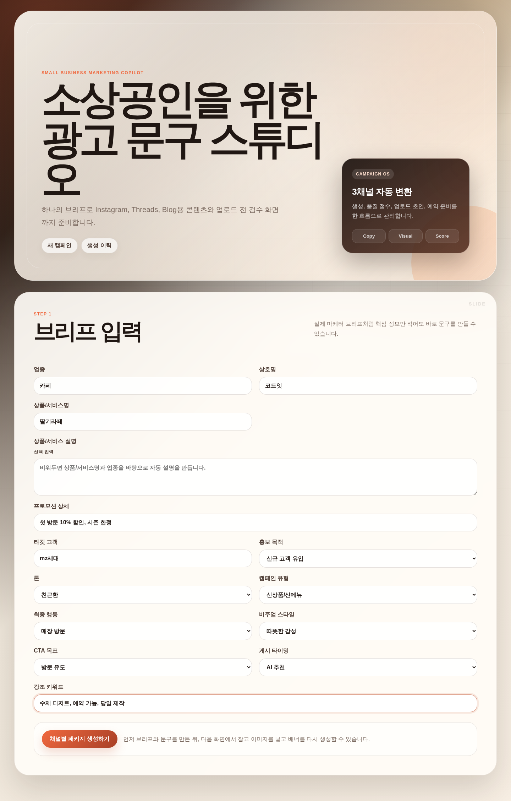
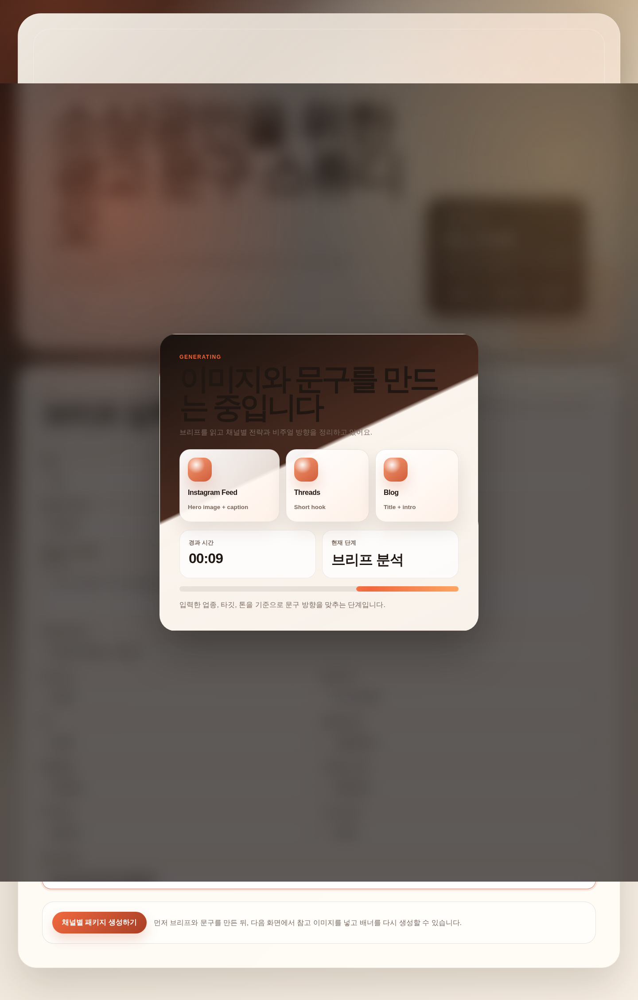
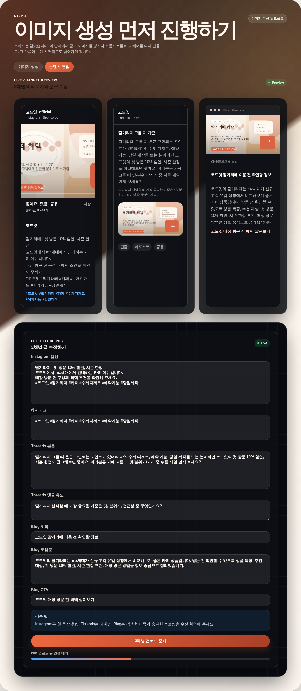
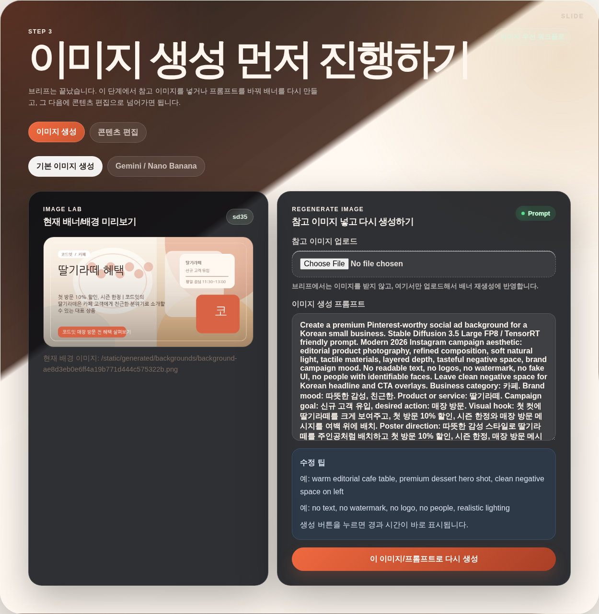
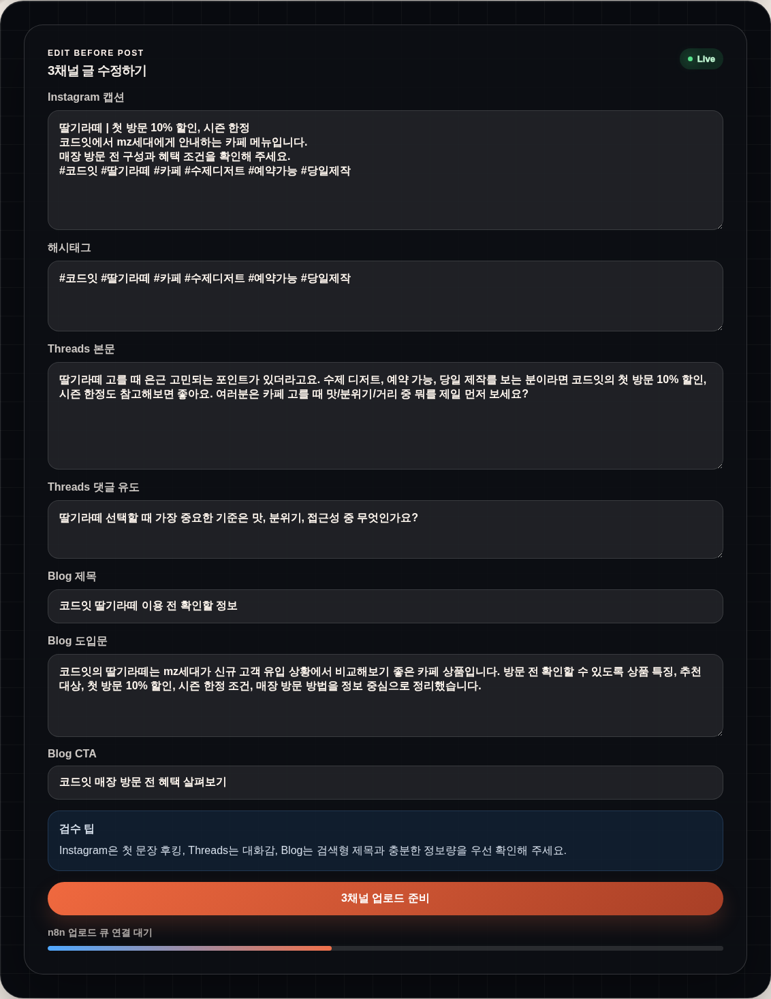

AI MARKETING AUTOMATION
01
소상공인을 위한
AI 홍보 자동화
서비스
상품 정보만 입력하면 Instagram·Threads·Blog 홍보 문구와 이미지를 만들고, 결과 화면에서 수정·이미지 재생성·예약 준비까지 이어서 처리하는 마케팅 자동화 MVP입니다.
3채널 동시 생성
이미지 재생성
예약/게시 준비
3
동시 생성 채널
6
사용 흐름 단계
MVP
제출 가능한 서비스형 결과물
한눈에 보는 핵심 가치
- 하나의 브리프로 채널마다 다른 문체와 정보량을 자동으로 맞춰줍니다.
- 결과 화면에서 바로 수정하고 이미지를 다시 만들 수 있습니다.
- 게시 준비, 계정 연결, 예약 흐름까지 이어져 실제 운영에 가깝습니다.
- API나 로컬 이미지 생성이 흔들려도 전체 흐름이 끊기지 않게 만들었습니다.
발표 한 줄 요약
브리프 한 번으로 3채널용 홍보 콘텐츠를 만들고, 이미지 재생성·검수·예약 준비까지 연결한 소상공인용 AI 홍보 도구입니다.
AGENDA
02발표 목차
기술 설명보다 먼저, 왜 만들었고 실제로 어떻게 쓰는지 보이도록 구성했습니다.
01
프로젝트 소개무엇을 만들었고 누구를 위한 서비스인지
02
문제와 해결 방향소상공인 홍보의 실제 어려움과 해결 아이디어
03
서비스 작동 방식브리프 입력부터 결과 수정, 예약 준비까지
04
주요 기능생성·수정·연결이 어떤 흐름으로 이어지는지
05
기술과 의사결정왜 FastAPI, fallback, Playwright 구조를 택했는지
06
성과와 개선 방향MVP 결과, 한계, 다음 단계
핵심 메시지: 단순 문구 생성기가 아니라, 소상공인의 실제 홍보 운영 흐름을 더 쉽게 만든 콘텐츠 작업실입니다.
오늘 바로 보여줄 화면
- 브리프 입력 후 3채널용 초안이 동시에 생성되는 흐름
- 결과 페이지에서 이미지 재생성과 문구 수정이 되는 장면
- 채널 연결과 예약 준비까지 이어지는 운영형 워크플로




PROJECT OVERVIEW
03프로젝트 개요
이 프로젝트는 소상공인이 복잡한 마케팅 툴을 배우지 않아도, 상품 정보 몇 가지만 입력하면 홍보 초안을 빠르게 만들 수 있도록 설계한 서비스입니다.
브리프 입력
3채널 초안 생성
이미지 수정
예약 준비
왜 만들었나
소상공인은 시간이 부족하고, 같은 내용을 채널마다 다르게 다시 쓰는 부담이 큽니다. 이 과정을 한 번에 이어서 처리하는 흐름이 필요했습니다.
주요 목표
- 하나의 브리프로 Instagram, Threads, Blog용 콘텐츠 동시 생성
- 결과 화면에서 이미지 재생성 및 문구 실시간 수정
- 채널 연결과 예약/게시 준비 흐름 제공
- 실패해도 서비스가 멈추지 않는 안정성 설계
목표 사용자
- 홍보할 시간은 부족하지만 온라인 홍보는 필요한 소상공인
- 카페, 디저트, 편집숍, 뷰티, 소규모 매장 운영자
SERVICE FLOW
04서비스는 이렇게 작동합니다
기술 용어 없이 보면, 입력 → AI 제작 → 결과 확인 → 연결/예약 흐름입니다.
브리프 입력
업종, 상호명, 상품명, 혜택, 타깃 고객처럼 핵심 정보만 입력합니다.
AI 초안 생성
Instagram, Threads, Blog용 문구와 배너 초안을 한 번에 만듭니다.
이미지와 문구 확인
이미지를 다시 만들고, 채널별 문구를 수정하면서 미리보기를 확인합니다.
연결과 예약 준비
채널 연결 정보를 넣고, 예약 저장 또는 게시 준비 상태까지 이어서 처리합니다.
중요한 점은 “자동으로 다 끝난다”가 아니라, 사람이 중간에 확인하고 수정할 수 있다는 점입니다.
REAL SCREENS
05실제 화면 예시
README에도 넣은 실제 캡처를 기준으로 사용자가 어떤 경험을 하게 되는지 보여줄 수 있습니다.
브리프 입력
사장님은 긴 설명 없이도 핵심 정보만 넣으면 됩니다.
생성 중 로딩
경과 시간과 현재 단계를 보여줘 기다리는 이유를 이해할 수 있게 했습니다.
3채널 미리보기
Instagram, Threads, Blog 초안을 한 화면에서 비교할 수 있습니다.
이미지 재생성
참고 이미지와 프롬프트를 바꿔 결과 배너를 다시 만듭니다.
KEY FEATURES
06핵심 기능
3채널 동시 생성
- Instagram, Threads, Blog를 한 번에 생성
- 채널마다 다른 문체와 정보량 반영
결과 화면 수정
- 채널별 문구를 직접 수정
- 미리보기와 편집을 동시에 확인
이미지 재생성
- 참고 이미지 업로드
- 프롬프트 수정 후 배너 재생성
채널 연결
- Instagram / Threads direct API
- Naver Blog Playwright 연결
예약 준비 흐름
- 예약 저장
- Mock 게시 시뮬레이션
Fallback 설계
- OpenAI 실패 시 mock fallback
- 이미지 생성 실패 시 local fallback
ARCHITECTURE
07아키텍처를 쉬운 말로 설명하면
비전공자용 설명
- 입력 화면에서 사장님이 가게 정보를 넣습니다.
- 가운데 AI 제작실이 문구와 이미지를 만듭니다.
- 결과 화면에서 사람이 한 번 더 수정합니다.
- 마지막에 채널에 연결해 예약하거나 게시 준비를 합니다.
- 모든 결과는 저장돼서 나중에 다시 열어볼 수 있습니다.
한 줄 설명
가게 정보를 넣으면 AI가 초안을 만들고, 사람이 다듬은 뒤 채널에 보내는 구조입니다.
기술 설명
- FastAPI가 전체 흐름을 조율합니다.
- 문구 생성, 배경 이미지 생성, 배너 합성을 분리했습니다.
- 결과는 CampaignStore(JSON)에 저장합니다.
- 채널 게시 구조는 adapter 형태로 분리했습니다.
- n8n 같은 외부 자동화와도 연결할 수 있는 구조를 열어뒀습니다.
DECISIONS
08주요 의사결정
1. Streamlit 대신 FastAPI를 선택한 이유
- 단순 데모보다 실제 서비스 구조를 보여주고 싶었습니다.
- HTML 화면과 JSON API를 함께 운영하기 쉬운 구조가 필요했습니다.
2. 단순 생성기보다 운영형 워크플로를 택한 이유
- 소상공인에게는 한 번 생성보다 수정하고 올리는 과정이 더 중요합니다.
- 그래서 결과 화면, 재생성, 연결, 예약 흐름까지 포함했습니다.
3. 공식 API 우선, 불가능한 채널만 브라우저 자동화
- Instagram, Threads는 공식 API를 우선 사용했습니다.
- Naver Blog는 현실적인 경로로 Playwright 자동화를 선택했습니다.
4. 실패해도 전체 흐름이 끊기지 않는 설계
- OpenAI 실패 시 mock fallback
- 이미지 생성 실패 시 local fallback
- Naver Blog 연결 감지 실패 시 수동 완료 fallback
RESULTS
09구현 결과와 성과
구현 결과
- 브리프 한 번으로 3채널용 초안 생성
- 이미지 재생성과 실시간 편집 가능
- 생성 이력 저장 및 재생성 가능
- 채널 연결 및 예약 준비 흐름 제공
성과
- 단순 생성기가 아니라 운영에 가까운 MVP 완성
- 비전공자에게 설명 가능한 서비스형 구조 확보
- adapter와 fallback 중심 설계로 확장성 확보
- README, 보고서, 업무일지, 발표자료까지 제출 가능 상태 정리
연결과 예약 준비
결과 화면 오른쪽에서 연결 정보와 예약 흐름까지 이어갈 수 있습니다.

게시 전 최종 수정
완전 자동이 아니라, 사람이 통제하는 자동화 구조를 보여줍니다.
IMPROVE
10한계와 개선 방향
현재 한계
- Naver Blog 자동화는 로그인 정책과 DOM 변경에 민감합니다.
- 로컬 SD 계열은 환경에 따라 속도와 안정성이 달라집니다.
- 현재 저장 구조는 JSON 기반이라 다중 사용자 운영에는 한계가 있습니다.
다음 단계
- Instagram / Threads OAuth 실제 도입
- SQLite 또는 PostgreSQL 전환
- 스토리지 분리와 다중 사용자 구조
- 성과 기반 재생성과 댓글/문의 분석 고도화
마무리 메시지
이 프로젝트의 핵심은 AI가 글을 써준다가 아니라, 소상공인이 실제 홍보 운영 흐름을 더 쉽게 이어가게 만든다는 점입니다.
발표 팁: 마지막 장에서는 단순 생성기보다 운영형 워크플로를 만든 프로젝트라는 점을 다시 강조하면 좋습니다.